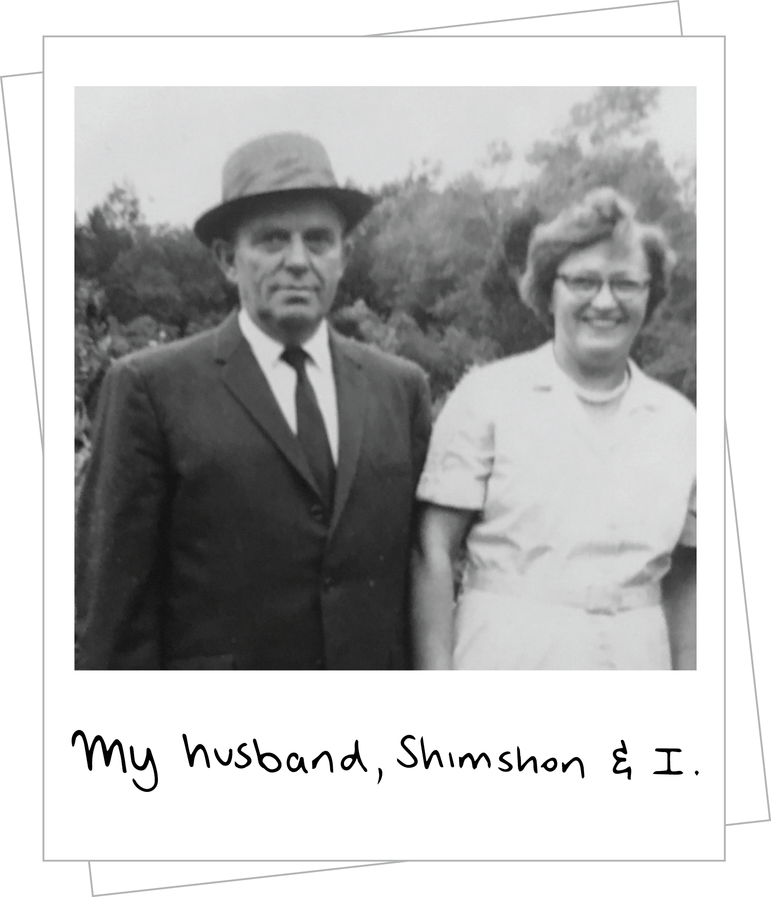

<!doctype html>
<!-- HTML5 Boilerplate -->
<!--[if lt IE 7]>      <html class="no-js lt-ie9 lt-ie8 lt-ie7"> <![endif]-->
<!--[if IE 7]>         <html class="no-js lt-ie9 lt-ie8"> <![endif]-->
<!--[if IE 8]>         <html class="no-js lt-ie9"> <![endif]-->
<!--[if gt IE 8]><!--> <html class="no-js"> <!--<![endif]-->
<head>
<meta charset="UTF-8">
<title>page 3</title>

<link href="https://fonts.googleapis.com/css?family=Oswald" rel="stylesheet" type="text/css">
<link href="https://fonts.googleapis.com/css?family=Roboto+Slab:100" rel="stylesheet" type="text/css">

	<!-- Responsive and mobile friendly stuff -->
	<meta name="HandheldFriendly" content="True">
	<meta name="MobileOptimized" content="320">
	<meta name="viewport" content="width=device-width, initial-scale=1.0">

<!-- Stylesheets -->
	<link rel="stylesheet" href="css/html5reset.css" media="all">
	<link rel="stylesheet" href="css/col.css" media="all">
	<link rel="stylesheet" href="css/2cols.css" media="all">
	<link rel="stylesheet" href="css/3cols.css" media="all">
	<link rel="stylesheet" href="css/4cols.css" media="all">
	<link rel="stylesheet" href="css/5cols.css" media="all">
	<link rel="stylesheet" href="css/6cols.css" media="all">
	<link rel="stylesheet" href="css/7cols.css" media="all">
	<link rel="stylesheet" href="css/8cols.css" media="all">
	<link rel="stylesheet" href="css/9cols.css" media="all">
	<link rel="stylesheet" href="css/10cols.css" media="all">
	<link rel="stylesheet" href="css/11cols.css" media="all">
	<link rel="stylesheet" href="css/12cols.css" media="all">

<link rel="stylesheet" href="Page1.css">
</head>

<body>


<div class="section group">
	<br>
    <br>
  
 
   	<div id="one" class="col span_1_of_4">
    
    <div class="heading">
    <h1>Siberia, 1939</h1>
    </div>
    
    <br>
    <br>

    
    <div class="subheading">
    <h2>“We were there a few months, and then after this, one night the Russian police came in and took us as spies.</h2>
    </div>
    
    <br>
  
  
   <div class="text">
    <p>We were not spies! But they needed us for hard labor in Siberia. They took us in big trailors, like it was 40-50 people in each trailor. They took us for seven weeks - we went just by these trailors and came to Sibera. 
    <br>
    <br>
We lived a very primitive life. In the traileors it was very primtiive in Siberia.  The town that we lived was named Minishinsk, (That is where I later met my husband, Shimshon,)</p>
    </div>
    
    </div>
    

    
    
    
    <div class="col span_1_of_4"></div>
    
    
    <div id="three" class="col span_1_of_4">
    
   
    
     </div>
    
    
    
    <div class="col span_1_of_4"></div>
  
    
    
</div>


<div class="left">
<a href="Page2.html">

</a>
</div>

<div class="right">
<a href="Page4.html">

</div>

<div class="home1">
<a href="Index.html">
Home
</a>
</div>

<div class="audio">
<audio src="part3.m4a" controls autoplay></audio>	
</style>


</body>
</html>